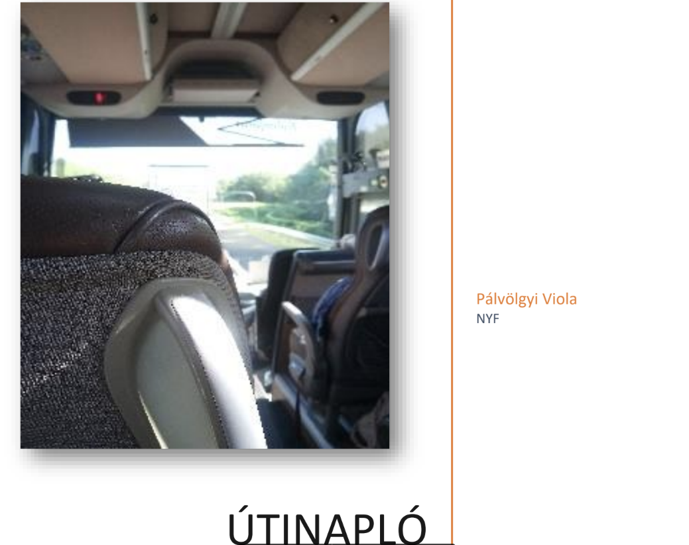

Hogyan kezdődött az év a Worddel?
Még mielőtt belevágtunk volna a nehezebb dolgokba, amik ránk vártak ebben az évben a Word vizeire eveztünk. Itt az NKP oldaláról néztünk feladatokat, ahol a megtanultuk hogyan kell rendesen egy Word dokumentumot megírni.
Utinapló
A Worddel az első munka, amit csinálnunk kellett az az év eleji tanulmányi kirándulásunkról egy utinapló volt. Ezzel elég sok dolgom volt (főleg az oldalak sorszámozásával), de végül sikerült és így már olyan dolgokat is tudok a Wordről, amiket eddig még nem.
Az osztályzás
A nehézségek legyőzése után végülis sikerült egy 5-öst kapnom rá. De el kell mondanom, hogy nagyon sokat foglalkozott vele az egész család. Szerencsére sikerült időben beadni és még szép is lett.
A végeredmény
